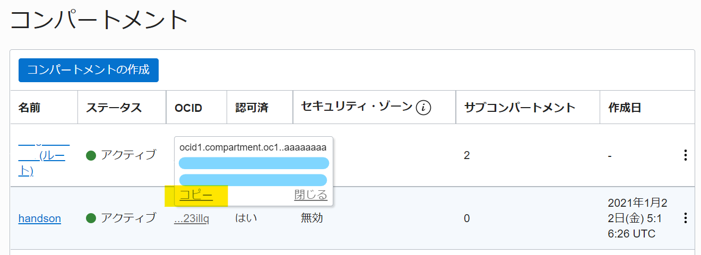
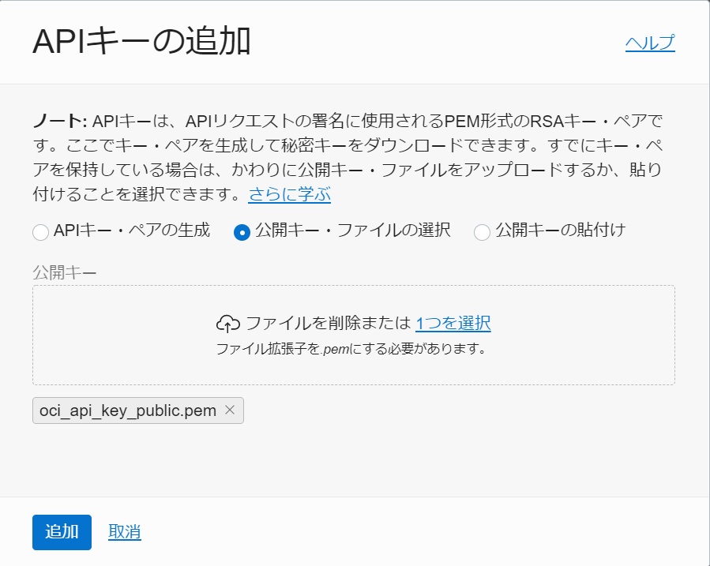

チュートリアル一覧に戻る : Oracle Cloud Infrastructure チュートリアル
これまでのチュートリアルでは、Oracle Cloud Infrastructure(OCI) をコンソールを通して利用してきましたが、OCIにはこれらの操作をRESTfulなウェブサービスを通して実行するためのAPIと、それを呼び出す **コマンド・ライン・インタフェース(CLI) ** が用意されています。
この章では、手元の Windows PC 環境にCLIをインストールしてOCIの基本的な操作を行う手順を通じて、APIとCLIの動作について理解を深めます。
また、セットアップしたCLIとBash環境を利用して、クラウド上に効率的にネットワークやインスタンスを作成する方法について学習します。
所要時間 : 約50分
前提条件 :
- チュートリアル : その1 - OCIコンソールにアクセスして基本を理解する を完了し、Oracle Cloud Infrastructure コンソールにアクセスでき、どこかのコンパートメント (ルート・コンパートメントも可) に対して管理権限を持っていること
- チュートリアルの その2 から その8 の内容についてひととおり理解していること (チュートリアルの実施することそのものは必須ではありませんが、一度目を通してコンソール上での操作について確認しておくことをお勧めします)
無償トライアル環境のお申込みについては こちら の資料を参照してください。
注意 : チュートリアル内の画面ショットについては Oracle Cloud Infrastructure の現在のコンソール画面と異なっている場合があります。
目次：
1. CLIのインストール
OCI の CLI では、Oracle Cloud Infrastructure SDK for Python上に構築され、Mac、Windows または Linux 上で実行されます。まず始めに、下記ドキュメントを参照し、インストール先の端末が要件を満たしていることを確認してください。
1-1. CLI のインストール
本チュートリアルでは、最も容易にインストールが可能な、インストーラ・スクリプト を使用し、Windows 10 へ、CLIのインストールを行っていきます。 ※ その他に、オフラインでのインストールや、依存関係のある各ソフトウェアを手動でインストールすることも可能です。詳しくは、OCIドキュメント：手動およびオフラインのインストール をご参照ください。
-
PowerShell の起動
お使いの端末で Windows キーを押下し、開かれた Windows メニューにて、「PowerShell」と検索します。検索結果の「Windows PowerShell」を右クリックし、「管理者として実行」を選択し、PowerShell を起動します。 ※ ユーザーアカウント制御の画面が表示された場合は、「はい」を選択してください。

-
PowerShell スクリプト実行ポリシーの変更
本インストーラは、スクリプトのインストール および 実行をすることで、依存関係などを自動補完します。このスクリプトの実行を許可するために、PowerShellの実行ポリシーを RemoteSigned実行ポリシー に変更します。
起動した PowerShell 画面にて、下記のコマンドを実行します。
Set-ExecutionPolicy RemoteSigned確認が求められた場合、Y（はい）を入力し、Enterキーを押下します。

-
インストーラ・スクリプトのダウンロード
次のコマンドを入力し、インストーラ・スクリプトをダウンロードします。
Invoke-WebRequest https://raw.githubusercontent.com/oracle/oci-cli/master/scripts/install/install.ps1 -OutFile install.ps1 -
インストーラ・スクリプトの実行
インストーラ・スクリプトは、プロンプト表示あり または プロンプト表示なし で実行できます。プロンプト表示なし の場合、デフォルト設定を受け入れて、実行されます。本チュートリアルでは、プロンプト表示なし で実行します。PowerShell 画面にて、次のコマンドを実行してください。
install.ps1 -AcceptAllDefaults -
インストールの確認
CLIのインストールが完了したことを確認するため、次のコマンドを実行してください。
oci -v「3.14.0」のように、バージョンが返ってきていれば、正しくインストールが完了しています。
1-2. (任意) Bashが使える環境のセットアップ
Oracle Cloud Infrastructure CLI はターミナル・コンソールから実行しますが、今回はそのコンソールとしてBashターミナルを利用するため、セットアップを行います。
Bashの利用は必須ではありません。OCIのCLIを利用するだけであれば、WindowsのコマンドプロンプトやPowerShellコンソールなどでも実行可能です。
ただしコマンドプロンプトやPowerShellコンソールでは本チュートリアルの一部のコマンドをそのまま実行できないため、適宜編集してから実行してください。 該当箇所においてNoteとして触れますが、PowerShellをお使いの場合は以下の点にご注意ください。
- CLIからの返り値を制御するためにOCI-CLI JMESPathを用いるとき、クエリー内部の全てのダブルコーテーションをバックスラッシュ（\）でエスケープすること
- 変数に文字列を格納するとき、左辺の変数名の前にはドル記号（$）を、右辺の文字列の最初と最後にはダブルコーテーション（”）を付加すること
- クエリー内で変数を用いるとき、コーテーションの処理を適切に行うこと
手元のPCのOSが MAC や Ubuntu 等であれば、OSに付属するbashターミナルをそのまま利用することができます。お手元のOSが Windows 10 であれば WSL(Windows Subsystem for Linux) の利用も可能です。セットアップ方法については こちら などを参考に実施してください。
Note
Bashターミナルをセットアップする際に、WindowsのPATH環境変数を引き継げるようにし、また%USERPROFILE%をホームディレクトリに設定しておくと便利です。設定方法は各ツールによって異なりますので、ツールに応じた適切な設定を実施してください
以下は、Windows 10 の環境に Git Bash をインストールする手順の例を説明しています。
- https://gitforwindows.org/ にアクセスし、Download ボタンを押してGit for Windows をダウンロードします
- ダウンロードした実行ファイル （Git-2.33.0.2-64-bit.exe など）を実行します
- インストーラーが実行されるので、Git Bashをインストールします。基本的に Next > ボタンを押していけばOKです。
2. CLI構成情報の取得
CLIを利用するためには、Oracle Cloud Infrastructureの操作に必要な資格証明を含む構成ファイルを設定する必要があります。本手順では、その構成ファイルを設定する際に必要となる各種情報を取得していきます。
2-1. (任意) 新規ユーザーの作成
CLIの構成に必要な情報を確認していく前段として、新規ユーザーの作成を行います。
CLIを通じたAPIアクセスを行うには、OCIのIAM (IDとアクセス管理) に登録された有効なユーザーが必要となっています。このユーザーはOCIのGUIコンソールへアクセスするユーザーを利用することもできますが、セキュリティの観点から、API専用のユーザーを作成して使用することを推奨します。
ここでは、新しく api.user という名前のユーザーを作成し、そのユーザーの権限でAPIアクセスを行っていく手順を紹介しますが、既に作成済みの任意のユーザーを利用する場合は、本手順はスキップすることが可能です。
-
Oracle Cloud Infrastructure にログインし、コンソールメニューから アイデンティティとセキュリティ → ユーザー を選択します
-
ユーザーの作成ボタンをクリックし、立ち上がってきたユーザーの作成画面にて、以下の項目を入力し、作成ボタンを押します-
ユーザー・タイプの選択（IDCSユーザーでログインしている場合のみ設定可能） - IAMユーザー
- 名前 - api.user (または任意)
- 説明 - (任意)
- 電子メール - (任意)
-
-
作成後、api.user というユーザーの詳細画面が表示されます
詳細画面 左下の リソース・メニューから
グループを選択し、ユーザーをグループに追加ボタンを押します -
「ユーザーをグループに追加」というウィンドウにて、「Administrators」グループを選択し、
追加ボタンを押しますNote
本チュートリアルでは、テナンシー(Tenancy)の管理権限を持つAdministratorsグループに所属させていますが、本番環境で使用する際には適切な必要最小限の権限のみを付与したグループを作成し、そこに所属させるようにしてください
2-2. 構成情報の確認
つづいて、構成ファイルを設定する際に必要となる各種情報を確認していきます。
-
ユーザーのOCIDの取得
Oracle Cloud Infrastructure にログインし、コンソールメニューから アイデンティティとセキュリティ → ユーザー を選択します。
ユーザーの一覧が表示されるので、APIアクセスに使用するユーザーの右側 トリコロン をクリックし、
OCIDのコピーを選択します。コピーしたOCIDは、テキストエディタなどを開き、ユーザーのOCIDである旨と共に、忘れずに控えておいてください。 -
テナンシのOCIDの取得
次に、コンソール画面上部の一番右にある人型のアイコンメニュー「プロファイル」をクリックし、テナンシ : XXX という名前のリンクをクリックします。

テナントの詳細画面が表示されるので、OCID: に表示されている コピー リンクをクリックします。

こちらも、テキストエディタなどを開き、コピーしたOCIDが テナンシのOCIDである旨と共に、忘れずに控えておいてください。
-
コンパートメントのOCIDの取得
Oracle Cloud Infrastructure にログインし、コンソールメニューから アイデンティティとセキュリティ → コンパートメント を選択します。
コンパートメントの一覧が表示されるので、APIを実行するリソースが含まれるコンパートメントの OCID 列にカーソルを当て、表示されたダイアログから OCID の コピー をクリックします。
コピーしたOCIDは、これまで同様、テキストエディタなどを開き、コンパートメントのOCIDである旨と共に、忘れずに控えておいてください。

3. CLIの設定
前の手順で取得した情報を元に、Oracle Cloud Infrastructureの操作に必要な資格証明を、構成ファイルに設定していきます。このファイルは、設定ダイアログを使用して作成することも、テキスト・エディタを使用して手動で作成することもできます。
3-1. CLI構成ファイルの設定
本チュートリアルでは、設定ダイアログを使用して、構成ファイルを設定する方法を紹介していきます。PowerShell 画面に戻り、次のコマンドを実行してください。
oci setup config
コマンドを実行すると、対話形式でいくつかの質問を聞かれるので、下記を参考に入力してください。
Note
今回はこのスクリプトの中でAPIキーを生成しますが、もし別途用意していあるAPIキーを使用する場合は Do you want to generate a new RSA key pair? という質問にNと答えてください。
- **Enter a location for your config [C:\Users\ <ユーザー名>\.oci\config]:** 入力なしで Enter キーを押下
- Enter a user OCID: - ステップ2-2 で確認したユーザーのOCIDを入力
- Enter a tenancy OCID: - ステップ2-2 で確認したテナンシのOCIDを入力
- Enter a region by index or name(Enter a region by index or name(e.g.1: af-johannesburg-1, 2: ap-chiyoda-1,（中略）, 44: us-sanjose-1): - アクセスしたいリージョンのインデックス（ap-tokyo-1リージョンなら13）、またはリージョン名を入力
- Do you want to generate a new RSA key pair? (If you decline you will be asked to supply the path to an existing key.) [Y/n]: - Y
- Enter a directory for your keys to be created [C:\Users<ユーザー名>.oci]: - 入力なしで Enter キーを押下
- Enter a name for your key [oci_api_key]: - 入力なしで Enter キーを押下
- Enter a passphrase for your private key (empty for no passphrase): - 任意（パスフレーズを設定しない場合は 入力なしで Enter キーを押下）
スクリプトが完了すると、対話形式の１つめの質問で確認されたロケーション（C:\Users\ <ユーザー名>\.oci\config）に、config ファイル と API 鍵ペア（秘密鍵がoci_api_key.pem、公開鍵がoci_api_key_public.pemという名前）が生成されています。
3-2. APIキーのアップロード
CLI から OCI に対してアクセスを行う際に API の認証が行われます。このため予め認証をパスするのに必要なAPIキーを、ユーザー毎にOCIにアップロードしておく必要があります。
ここでは、先ほど作成した鍵ペアのうち公開鍵を、OCIコンソールからアップロードします。
-
Oracle Cloud Infrastructure にログインし、コンソールメニューから アイデンティティとセキュリティ → コンパートメント を選択します。
-
ユーザーの一覧が表示されるので、APIアクセスに使用するユーザー名のリンク（先ほどOCIDをコピーしたユーザー (例：api.user) ）をクリックします。
-
ユーザーの詳細画面が開きますので、左下の リソース・メニューから
APIキーを選択し、APIキーの追加ボタンを押します -
「公開キー・ファイルの選択」を選択し、先ほど作成した鍵ペアのうち、公開鍵のファイル（例：C:\Users\ <ユーザー名>\.oci\oci_api_key_public.pem）を、「ファイルを削除または 1つを選択」という枠の中へ、ドラッグアンドドロップし、 **`追加`** というボタンをクリックします。

-
「構成ファイルのプレビュー」というダイアログが表示されますが、特に使用しないため、
閉じるボタンをクリックしてください。公開鍵の登録が完了すると、APIキー 欄に公開鍵が追加され、フィンガープリントが表示されます。

3-3. CLIからのアクセスの確認
ここまで完了すると、Oracle Cloud Infrastructure 環境にCLIでアクセスできるようになっているはずです。実際に 確認していきましょう。
-
PowerShell 画面に戻り、次のコマンドを実行します。
<コンパートメントのOCID> には、ステップ2-2 で確認したコンパートメントのOCIDの値を入力します。oci compute image list -c <コンパートメントのOCID> -
実行結果を確認します。以下のようなJSONのデータが返ってきていたら、無事にOCIへの接続に成功しています。もし失敗した場合には、上記のconfigの手順を見直し、再度実行してください。
{ "data": [ { "base-image-id": null, "compartment-id": null, "create-image-allowed": true, "display-name": "Windows-Server-2012-R2-Standard-Edition-VM-2017.11.06-0", "id": "ocid1.image.oc1.phx.aaaaaaaalumo6pbq33qzmmnh544qouy3dhbfpzwm5nil652xa524pyw2wxfa", "lifecycle-state": "AVAILABLE", "operating-system": "Windows", "operating-system-version": "Server 2012 R2 Standard", "time-created": "2017-11-17T22:52:56.402000+00:00" },...
3-4. デフォルトコンパートメント値の設定
先ほどのテストで入力した「 -c <コンパートメントのOCID> 」というオプションのように、コマンドを実行する場合は、コンパートメントを指定する機会が多くあります。
このコンパートメントの指定は、予めパラメーターファイルを作成しておくことにより、毎回入力することを回避することが可能です。
本手順では、コンパートメントの OCID の値をパラメータファイルに設定して、次回のコメンド発行時からは入力をスキップできるようにします。
-
PowerShell 画面に戻り、次のコマンドを実行します。
このコマンドで、config ファイルと同じフォルダ配下に、「oci_cli_rc」 というファイルが作成されます。
oci setup oci-cli-rc -
任意のテキストエディタで、この「oci_cli_rc」ファイルを開き、以下の記述を追加します。<コンパートメントのOCID> には、ステップ2-2 で確認したコンパートメントのOCIDの値を入力します。
[DEFAULT] compartment-id=<コンパートメントのOCID> -
次に、先ほどと同じコマンドを、今度は「-c オプション」をつけずに実行してみます。
oci compute shape list -
以下のようなJSONのデータが返ってきていれば、無事にデフォルトコンパートメントの設定に成功しています。もし失敗した場合には、上記の手順を見直し、再度実行してください。
"data": [ { "shape": "BM.Standard2.52" }, { "shape": "BM.DenseIO2.52" }, { "shape": "BM.Standard1.36" },...
ここまでで、基本的なOCI CLIのセットアップは完了しています。ここからは、OCI CLI の出力結果の制御方法、様々なOCIのオブジェクトの作成方法について解説していきます。
これらの手順を通して、より実践的なCLIの使用方法を体験してみてください。
4. (参考) JMESPathを使った出力制御
OCI-CLIのデフォルトの返り値はJSON形式になっています。
そのままではスクリプトの中では使いづらい場合がありますが、JSONのクエリ言語である JMESPath を使うと、返り値をパースして任意のフォーマットで値を習得することができます。
この項では、JMESPathを利用した出力制御を試してみます。
-
OCI-CLI JMESPathを利用するには、–query オプションを利用します。まずは先程のシェイプ一覧を絞り込んで、要素1つだけを表示してみます。
任意のターミナル・コンソールで以下のコマンドを実行します。
oci compute shape list --query 'data[0]'すると、以下のようなアウトプットが返ってきます。
{ "gpu-description": null, -- 中略 -- "shape": "BM.Standard.A1.160" }これは、data という要素配列の中の最初(0)のエントリーを表示する、という指示になります。
-
次に、要素の最初のエントリーではなく、要素名を検索して一致するエントリーを表示するようにします。
以下のコマンドを実行します。
oci compute shape list --query 'data[?shape==`VM.Standard2.1`]'Note
JMESPath構文において、検索などの文字列については「`」(バッククォート)で囲むようにしてください。
すると、以下のように Shape という要素が VM.Standard2.1 のエントリーのみが帰ってきます。
[ { "gpu-description": null, -- 中略 -- "shape": "VM.Standard2.1" } ]もし、要素名にハイフンが含まれる場合は、要素名を「”」(タブルコーテーション)で囲みます。
oci compute image list --query 'data[?"operating-system"==`Oracle Linux`]'Note
Windows PowerShellをお使いの場合、クエリー内部の全てのダブルコーテーションはバックスラッシュ（\）でエスケープする必要があります。例えば、上記のコマンドは次のようになります。
oci compute image list --query 'data[?\"operating-system\"==`Oracle Linux`]' -
完全一致ではなく、一部の文字列を含むものを検索したい場合は、contains 句を使います。 例えば、operating-system に Linux という文字列を含むイメージのみを抽出したい場合は、以下のようにします。
oci compute image list --query 'data[?contains("operating-system",`Linux`)]' -
sort_by 句を使うと、結果を並び替えることができます。
例えば、time-created の順番で並び替えたい場合は、以下のようにします。
oci compute image list --query 'sort_by(data, &"time-created")[?contains("operating-system",`Linux`)]'ただ、作成日時で並び替えたいのであれば、OCI-CLI の –sort-by オプションを使用することもできます。 以下のコマンドの実行結果は、上記コマンドと同じ結果になります。
oci compute image list --sort-by TIMECREATED --sort-order ASC --query 'data[?contains("operating-system", `Linux`)]'Note
oci-cli コマンドの –sort-by は、TIMECRETED の場合デフォルトが降順(DESC)で表示されます。(ややこしいことにJMESPathと逆です・・・)合わせて –sort-order を指定することで明示的に昇順(ASC)、降順(DESC)を指定できるので、間違い防止のために常に指定することをおすすめします。 sort-by オプションの詳細については oci compute image list –help コマンドをご参照ください。
-
要素のうち、一部の要素だけを表示したい場合は、ドット「.」のあとに要素名を追記します。
例えば、上記の検索結果のうち id と display-name という要素だけを抽出したい場合は、以下のコマンドを発行します。
oci compute image list --query 'sort_by(data, &"time-created")[?contains("operating-system",`Linux`)].{id:id,"display-name":"display-name"}' -
JSONの {“要素” : “値”} という表記ではなく、単独の値のみを表示したい場合は、「.」のあとに一つの要素名を直接記述します。
oci compute image list --query 'sort_by(data, &"time-created")[?contains("operating-system",`Linux`)]."display-name"' -
パイプ「|」を利用して、処理を連結することができます。例えば配列の1つ目だけを表示するには、パイプのあとに[0]を記述します。
oci compute image list --query 'sort_by(data, &"time-created")[?contains("operating-system",`Linux`)]."display-name" | [0]'パイプのあとに[-1]を記述すると、配列の最後の1つを表示します。
oci compute image list --query 'sort_by(data, &"time-created")[?contains("operating-system",`Linux`)]."display-name" | [-1]'すでにsort_byで作成日付順(昇順 = 古い順)にソートしてあるので、[-1]を記述した場合は作成日付が最も新しいイメージのみが検索されているはずです。
結果は以下のような形になります。(データは異なる場合があります)
"Oracle-Linux-7.5-Gen2-GPU-2018.08.14-0" -
最後に、OCI-CLI のオプションの –raw-output 句をつけると、ダブルコーテーションを外した文字列を抽出できます。
oci compute image list --query 'sort_by(data, &"time-created")[?contains("operating-system", `Linux`)]."display-name" | [-1]' --raw-output返り値は、おそらく以下のような形になるはずです。
Oracle-Linux-7.5-Gen2-GPU-2018.08.14-0
このように、JMESPathを利用すると、コマンドラインで利用しやすいテキストフォーマットでCLIの結果を抽出できるようになるので、ローカル側のシェルの挙動に依存しないスクリプトを記述することができるようになります。
JMESPath には他にも色々と便利な機能がありますので、こちらの jmespath.org のサイトを参考に色々と試してみてください。
5. (参考) CLIを利用したオブジェクト作成
本手順では、実際にOCI CLI を利用し、テナンシ上にオブジェクトを作成していきます。
5-1. VCNの作成
CLIを利用して、仮想クラウド・ネットワーク（VCN）を作成します。
-
Bash ターミナルを起動し、シェル環境変数「VCNNAME」に任意の名前を設定します。この値は後でVCNを作成する際に使用します。
<VCNの表示名>は、例えば tutorial-cli-vcn などの任意の文字列で置き換えてください。
VCNNAME=<VCNの表示名>Note
Windows PowerShellをお使いの場合、左辺の変数名の前にはドル記号（$）を、右辺の文字列の最初と最後にはダブルコーテーション（”）を付加してください。 例えば、<VCNの表示名>がtutorial-cli-vcnの場合、上記のコマンドは次のようになります。
$VCNNAME="tutorial-cli-vcn" -
次に、以下のコマンドを発行して、VCNを作成します。
oci network vcn create --cidr-block 10.0.0.0/16 --display-name $VCNNAME -
以下のようなJSONのメッセージが返ってきていれば、VCNの作成は完了しています。
{ "data": { "cidr-block": "10.0.0.0/16", "cidr-blocks": [ "10.0.0.0/16" ], "compartment-id": "ocid1.compartment.oc1..xxxxx", "default-dhcp-options-id": "ocid1.dhcpoptions.oc1.ap-osaka-1.aaaaxxx", "default-route-table-id": "ocid1.routetable.oc1.ap-osaka-1.aaxxx", "default-security-list-id": "ocid1.securitylist.oc1.ap-osaka-1.aaxxx", "defined-tags": {}, "display-name": "tutorial-cli-vcn", "dns-label": null, "freeform-tags": {}, "id": "ocid1.vcn.oc1.ap-osaka-1.amaaxxx", "ipv6-cidr-block": null, "ipv6-public-cidr-block": null, "lifecycle-state": "AVAILABLE", "time-created": "2021-MM-ddT08:24:05.779000+00:00", "vcn-domain-name": null }, "etag": "7c0e2701" } -
以下のコマンドを発行し、今作成したVCNのOCID情報を取得し、シェル変数VCNIDに代入します。
VCNID=$(oci network vcn list --query 'data[?"display-name"==`'$VCNNAME'`].id | [0]' --raw-output)Note
Windows PowerShellで変数を含んだコマンドを記述する場合、クエリー内のコーテーションの処理を適切に行ってください。 例えば、文字列の連結演算を行った結果をクエリーに渡す方法があり、上記のコマンドは次のように書き換えることができます。
$VCNID=$(oci network vcn list --query ('data[?\"display-name\"==`'+$VCNNAME+'`].id | [0]') --raw-output) -
シェル変数「VCNID」の値を確認します。ocid1.vcn… のような値が戻ってきたら、正しく変数が取得できています。
echo $VCNID参考として、ステップ2において以下のコマンドを発行することで、VCNの作成と同時に返り値からOCIDを取得し、シェル変数への格納を一度に行うこともできます。
VCNID=$(oci network vcn create --cidr-block 10.0.0.0/16 --display-name $VCNNAME --query 'data.id' --raw-output)
5-2. インターネットゲートウェイの作成
CLIを利用して、作成したVCNにインターネット・ゲートウェイを設置します。
-
Bash ターミナルで以下のコマンドを入力します。
<インターネット・ゲートウェイの表示名>は、例えば tutorial-cli-igw などの任意の文字列を入力してください。
IGWNAME=<インターネット・ゲートウェイの表示名> -
以下のコマンドを発行し、インターネット・ゲートウェイを作成します。
また同時に、返り値から発行されたOCIDを取得しシェル変数「IGWID」に格納します。
IGWID=$(oci network internet-gateway create --is-enabled true --vcn-id $VCNID --display-name $IGWNAME --query 'data.id' --raw-output) -
シェル変数「IGWID」の値を確認します。ocid1.internetgateway… のような値が戻ってきたら、正しくインターネット・ゲートウェイが作成できています。
echo $IGWID
5-3. デフォルト・ルート・テーブルの変更
CLIを利用して、作成したVCNのデフォルト・ルート・テーブルの情報を変更し、先ほど作成したインターネット・ゲートウェイへのルートを設定します。
-
以下のコマンドを発行し、VCNに設定されているデフォルト・ルート・テーブルのOCID情報を取得し、シェル変数「RTID」に代入します。
RTID=$(oci network vcn list --query 'data[?id==`'$VCNID'`]."default-route-table-id" | [0]' --raw-output) -
シェル変数「RTID」の値を確認します。ocid1.routetable… のような値が戻ってきたら、正しく変数が取得できています。
echo $RTID -
Bash ターミナルで以下のコマンドを入力し、ルートテーブルを更新します。
oci network route-table update --rt-id $RTID --route-rules '[{"cidrBlock":"0.0.0.0/0","networkEntityId":"'$IGWID'"}]' -
警告メッセージが出るので、yと入力します
WARNING: Updates to route-rules will replace any existing values. Are you sure you want to continue? [y/N]: y -
以下のようなJSONのメッセージが返ってきたら、ルート・テーブルの更新は完了しています。
{ "data": { "compartment-id": "ocid1.compartment.oc1..aaaxxxx", "defined-tags": {}, "display-name": "Default Route Table for tutorial-cli-vcn", "freeform-tags": {}, "id": "ocid1.routetable.oc1.ap-osaka-1.aaaaxxxx", "lifecycle-state": "AVAILABLE", "route-rules": [ { "cidr-block": "0.0.0.0/0", "description": null, "destination": "0.0.0.0/0", "destination-type": "CIDR_BLOCK", "network-entity-id": "ocid1.internetgateway.oc1.ap-osaka-1.aaaxxxx" } ], "time-created": "2021-09-13T08:24:05.779000+00:00", "vcn-id": "ocid1.vcn.oc1.ap-osaka-1.amaaxxxx" }, "etag": "ca67717b" }
5-4. デフォルト・セキュリティ・リストの変更
CLIを利用して、作成したVCNのデフォルト・セキュリティ・リストの情報を変更します。 今回は、sshアクセスのためのインターネットからのtcp/22番ポート、ping応答のためのICMPエコーのインバウンド通信を許可する設定を行います。
-
以下のコマンドを発行し、VCNに設定されているセキュリティ・リストのOCID情報を取得し、変数「SECLISTID」に代入します。
SECLISTID=$(oci network security-list list --vcn-id $VCNID --query 'data[0].id' --raw-output) -
設定した変数「SECLIST」の値を確認します。ocid1.securitylist… のような値が戻ってきたら、正しく変数が取得できています。
echo $SECLISTID -
Bash ターミナル以下のコマンドを入力し、セキュリティリストを更新します。
oci network security-list update --security-list-id $SECLISTID --ingress-security-rules '[{"icmpOptions":null,"isStateless":null,"protocol":"6","source":"0.0.0.0/0","tcpOptions":{"destinationPortRange":{"max":22,"min":22},"sourcePortRange":null},"udpOptions":null},{"icmpOptions":{"code":4,"type":3},"isStateless":null,"protocol":"1","source":"0.0.0.0/0","tcpOptions":null,"udpOptions":null},{"icmpOptions":{"code":null,"type":0},"isStateless":false,"protocol":"1","source":"0.0.0.0/0","tcpOptions":null,"udpOptions":null},{"icmpOptions":{"code":null,"type":8},"isStateless":false,"protocol":"1","source":"0.0.0.0/0","tcpOptions":null,"udpOptions":null}]' -
警告メッセージが出るので、yと入力します
WARNING: Updates to egress-security-rules and ingress-security-rules will replace any existing values. Are you sure you want to continue? [y/N]: y -
JSONのメッセージが帰ってきたら、セキュリティ・リストの更新は完了しています。
{ "data": { "compartment-id": "ocid1.compartment.oc1..aaaxxxx", "defined-tags": {}, "display-name": "Default Security List for tutorial-cli-vcn", "egress-security-rules": [ { "description": null, "destination": "0.0.0.0/0", "destination-type": "CIDR_BLOCK", "icmp-options": null, "is-stateless": false, "protocol": "all", "tcp-options": null, "udp-options": null } ], "freeform-tags": {}, "id": "ocid1.securitylist.oc1.ap-osaka-1.aaaxxxx", "ingress-security-rules": [ { "description": null, "icmp-options": null, "is-stateless": false, "protocol": "6", "source": "0.0.0.0/0", "source-type": "CIDR_BLOCK", "tcp-options": { "destination-port-range": { "max": 22, "min": 22 }, "source-port-range": null }, "udp-options": null }, { -- 中略 -- } ], "lifecycle-state": "AVAILABLE", "time-created": "2021-MM-ddT08:24:05.779000+00:00", "vcn-id": "ocid1.vcn.oc1.ap-osaka-1.amaaaaxxxx" }, "etag": "f9a0090" }
5-5. サブネットの作成
CLIを利用して、VCNの中にサブネットを作成します。
-
以下のコマンドを発行し、現在利用しているリージョンで利用可能な可用性ドメインの一覧を取得します
oci iam availability-domain list --query 'data[*].name' -
戻ってきた値は、現在利用可能な可用性ドメインの一覧です。
[ "XhqH:PHX-AD-1", "XhqH:PHX-AD-2", "XhqH:PHX-AD-3" ] -
表示された可用性ドメインのうち、どこにサブネットを作成するかを選択し、その番号の可用性ドメインの名前を変数「ADNAME」に代入します。
例えば、AD-1 を選択した場合は、以下のコマンドを発行します。
ADNAME=$(oci iam availability-domain list --query 'data[?contains(name, `AD-1`)].name | [0]' --raw-output) -
代入した変数「SUBNETID」の値を確認します。「AD-1」を含む可用性ドメイン名が返ってきていれば、正しく可用性ドメインの設定ができています。
echo $ADNAME -
Bash ターミナルで以下のコマンドを入力し、サブネットをひとつ作成します。
また同時に返り値から作成したサブネットのOCIDを取得し、シェル変数「SUBNETID」に格納します。
SUBNETID=$(oci network subnet create --availability-domain $ADNAME --cidr-block 10.0.1.0/24 --vcn-id $VCNID --display-name sub1ad1 --prohibit-public-ip-on-vnic false --route-table-id $RTID --security-list-ids '["'$SECLISTID'"]' --query 'data.id' --raw-output) -
代入した変数「SUBNETID」の値を確認します。ocid1.subnet… のような値が帰ってきたら、サブネットは正しく作成されています。
echo $SUBNETID
5-6. インスタンスの作成
CLIを利用して、作成したサブネットの中にインスタンスを作成します。
-
インスタンスへのsshアクセスに使用する鍵ペアが無い場合は作成しておきます。
Bash ターミナル上で以下のコマンドを発行し、鍵ペアを新しく作成します。
ssh-keygen対話的なダイアログが起動してきますが、今回のチュートリアルでは Enter キーを押していく形でOKです。
処理が完了すると、~/.ssh に、 id_rsa と id_rsa.pub というファイルが作成されているはずです。
-
以下のコマンドを発行し、インスタンスの作成に利用できるイメージのIDの一覧を取得します。
–output=table オプションをつけると、表形式で値が返ってきます。
oci compute image list --query 'data[*].{"operating-system":"operating-system","operating-system-version":"operating-system-version","display-name":"display-name"}' --output=table -
戻ってきた値は、現在利用可能なイメージの一覧です。
+------------------------------------------------------------------------+------------------------------+---------------------------+ | display-name | operating-system | operating-system-version | +------------------------------------------------------------------------+------------------------------+---------------------------+ | Windows-Server-2019-Standard-Edition-VM-Gen2-2021.07.01-0 | Windows | Server 2019 Standard | | Windows-Server-2019-Standard-Edition-VM-Gen2-2021.05.12-0 | Windows | Server 2019 Standard | | Windows-Server-2019-Standard-Edition-VM-Gen2-2021.04.13-0 | Windows | Server 2019 Standard | | Windows-Server-2019-Standard-Edition-VM-E3-2021.03.17-0 | Windows | Server 2019 Standard | | Windows-Server-2019-Standard-Edition-VM-E3-2021.03.09-0 | Windows | Server 2019 Standard | (以下略) -
この中から任意のイメージを一つ選択し、そのイメージのOCIDを取得して変数「IMAGE」に代入します。
例えば、Oracle Linux 8 のイメージ（Oracle-Linux-8.4-2021.08.27-0）を選択する場合には、以下のコマンドを発行します。
IMAGEID=$(oci compute image list --display-name "Oracle-Linux-8.4-2021.08.27-0" --query 'sort_by(data, &"time-created")[-1].id' --raw-output)作成したいOSやバージョンに応じて、「–display-name」等を変更してください。
-
設定した変数「IMAGEID」の値を確認します。ocid1.image… のような値が帰ってきたら、正しく変数が設定されています。
echo $IMAGEID -
次に、手順４で選択したイメージと互換性のあるシェイプの一覧を次のコマンドで取得します。
oci compute shape list --image-id $IMAGEID --query 'data[*].shape' -
戻ってきた値は、現在利用可能なシェイプの一覧です。
[ -- 中略 -- "VM.Standard.E4.Flex", "VM.Standard.E3.Flex", "VM.Standard.A1.Flex", "VM.Standard2.1", "VM.Standard2.2", "VM.Standard2.4", -- 中略 -- ]この中から任意のシェイプを一つ選択し、その値をシェル変数「SHAPE」に代入します。
<シェイプ名>は、VM.Standard2.1 などの任意の文字列に置き換えてください。
SHAPE=<シェイプ名> -
以下のコマンドを入力し、インスタンスを作成します。また同時にその返り値からインスタンスのOCIDを取得し、変数「INSTANCEID」に代入します。ssh-authorized-keys-fileオプションで指定する公開鍵へのパスは適宜変更してください。
INSTANCEID=$(oci compute instance launch --availability-domain $ADNAME --image-id $IMAGEID --shape $SHAPE --ssh-authorized-keys-file ".ssh/id_rsa.pub" --subnet-id $SUBNETID --assign-public-ip true --query 'data.id' --raw-output) -
変数「INSTANCEID」の値を確認し、ocid1.instance… で始まる値が格納されていれば、インスタンスの作成処理が無事に開始されています。 通常、インスタンスの作成完了までには数分(仮想マシンの場合1-2分、ベアメタルの場合3-5分程度)かかります。
以上で、この章の作業は終了です。
チュートリアル一覧に戻る : Oracle Cloud Infrastructure チュートリアル